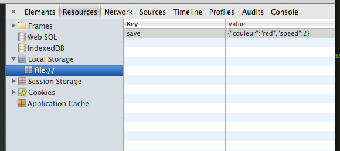

github : https://github.com/brunosimon/hetic
site : http://bruno-simon.com/hetic/p2017/
contact : bruno.simon@hetic.net - @bruno_simon
Local Storage (ou web storage) est une API HTML5 permettant de stocker des données en locale chez l'utilisateur
Elle fait partie des APIs HTML5 Offline
Ces données peuvent persister même si l'utisateur quitte le navigateur ou redémarre l'ordinateur.
Contrairement aux cookies, ces données ne sont pas envoyées dans chaque requête.
Le format stocké est une chaine de caractères (string)
Il faudra donc faire attention aux données envoyées et comment les récupérer
Vous pouvez stocker jusqu'à 5 Mo de données (bonne chance)
//Ajouter et récupérer
localStorage.setItem('var_1','value_1'); //Set
console.log(localStorage.getItem('var_1')); //Get
//Équivaut à
localStorage.var_2 = 'value_2';
console.log(localStorage.var_2);
//Équivaut à
localStorage['var_3'] = 'value_3';
console.log(localStorage['var_3']);
//Supprimer une donnée
localStorage.removeItem('var_1');
//Vider le local storage
localStorage.clear();
//Exemple complet pour un objet avec JSON
var mon_objet = {
couleur : 'red',
vitesse : 2
};
//Set
localStorage.save = JSON.stringify(mon_objet);
//Get
var objet_sauvegarde = JSON.parse(localStorage.save);
Sur les navigateurs récents tels que Chrome, il est possible d'inspecter le contenu de local storage.
Pour cela, ouvrez l'inspecteur, allez dans l'onglet "Ressources" et allez dans la partie "Local Storage"
Vous y trouverez toutes les clés/valeurs
